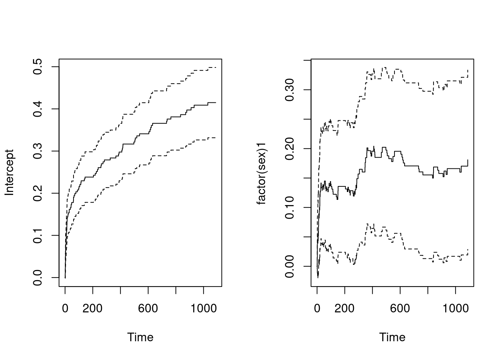
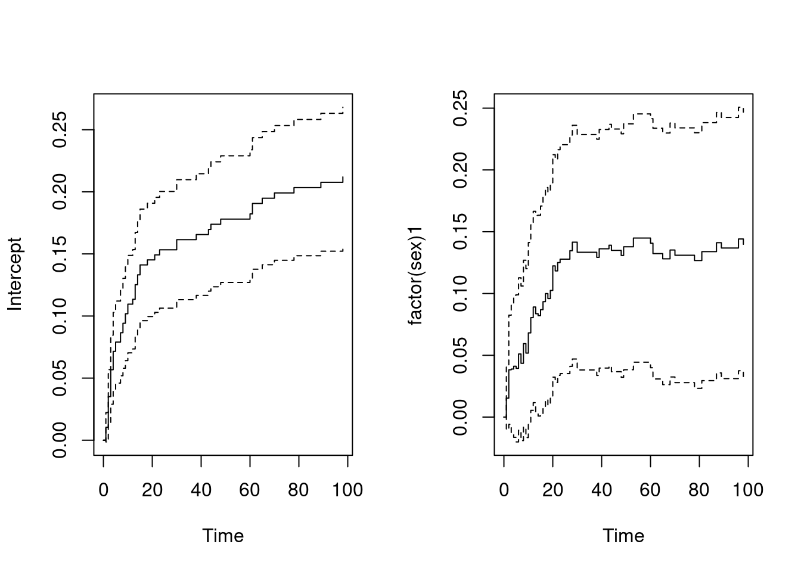
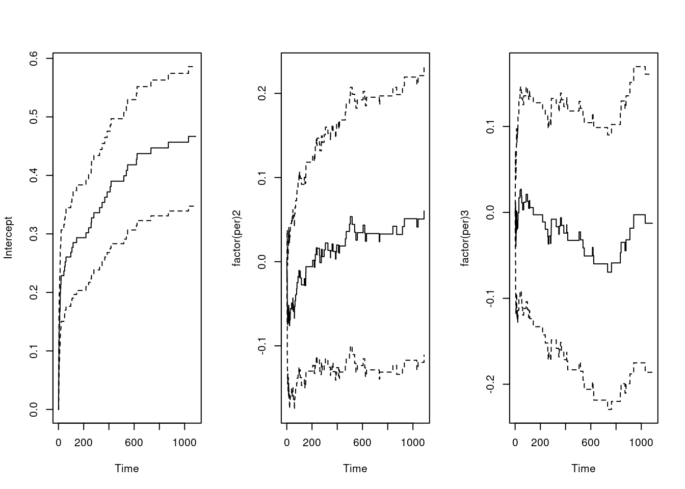
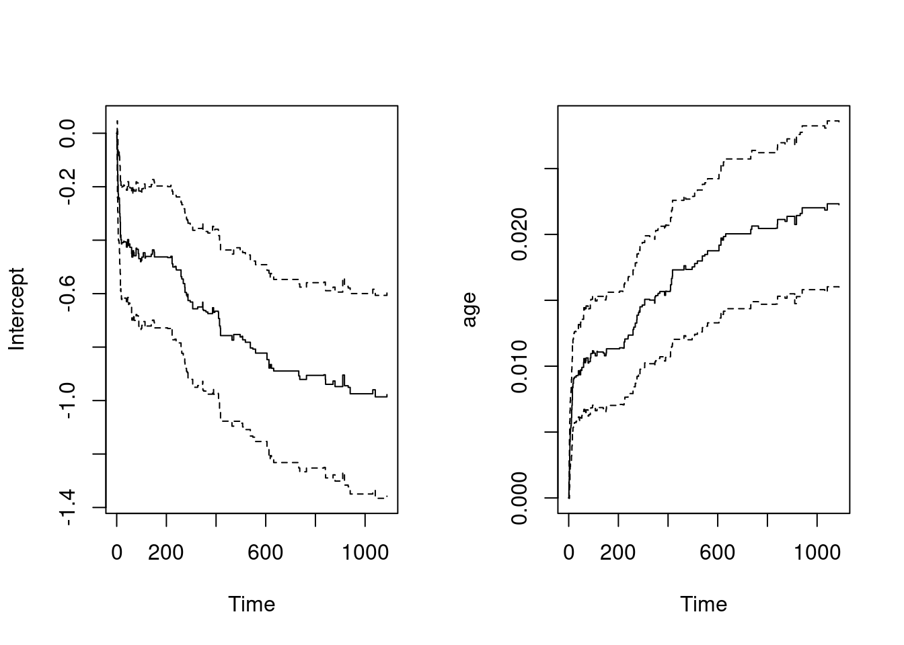
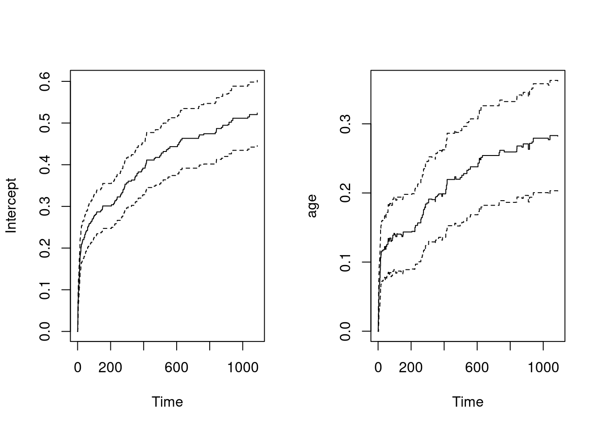
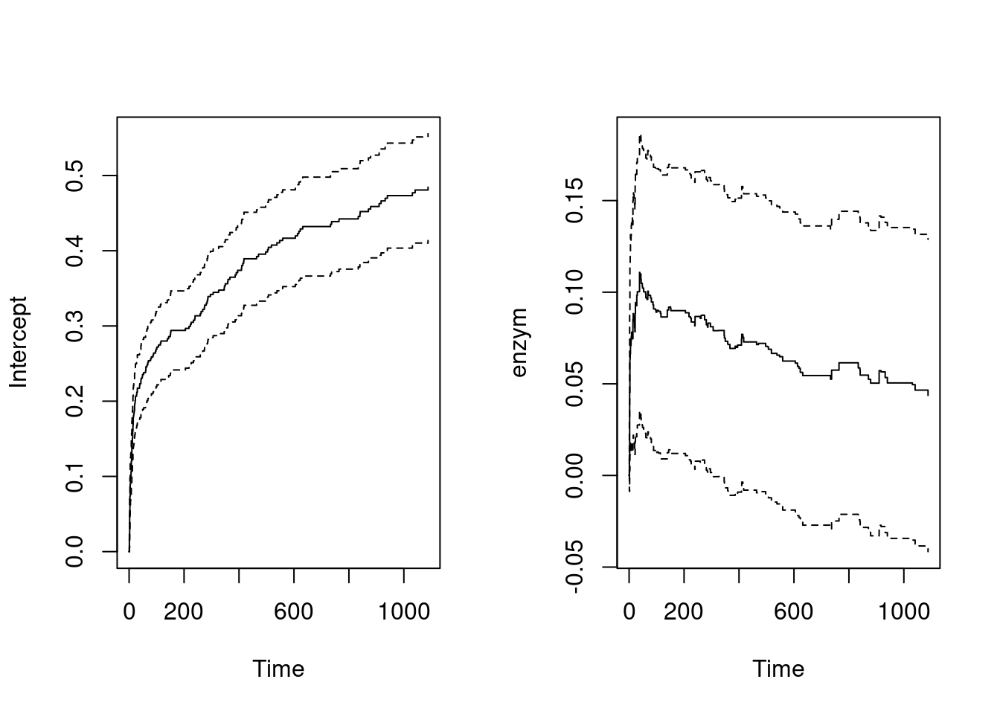
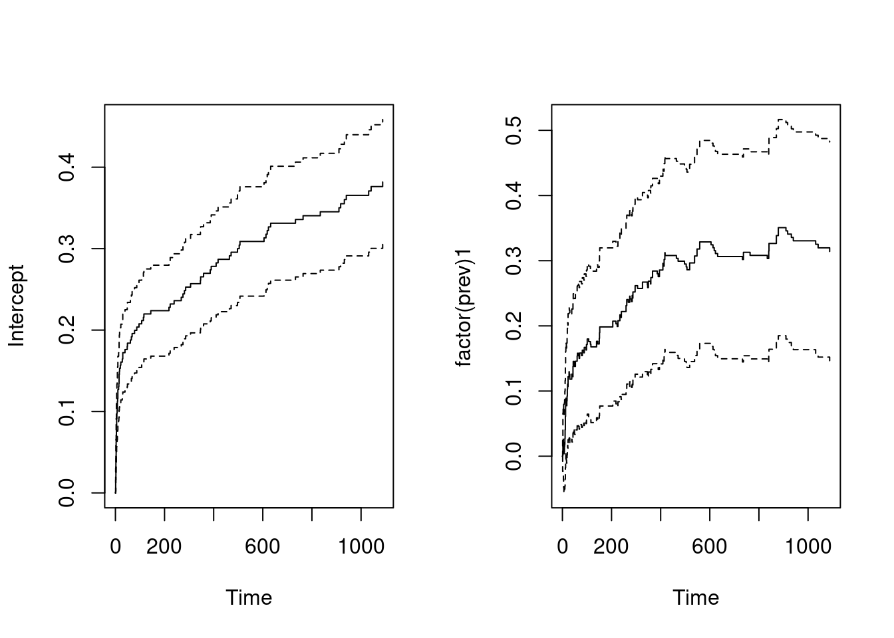
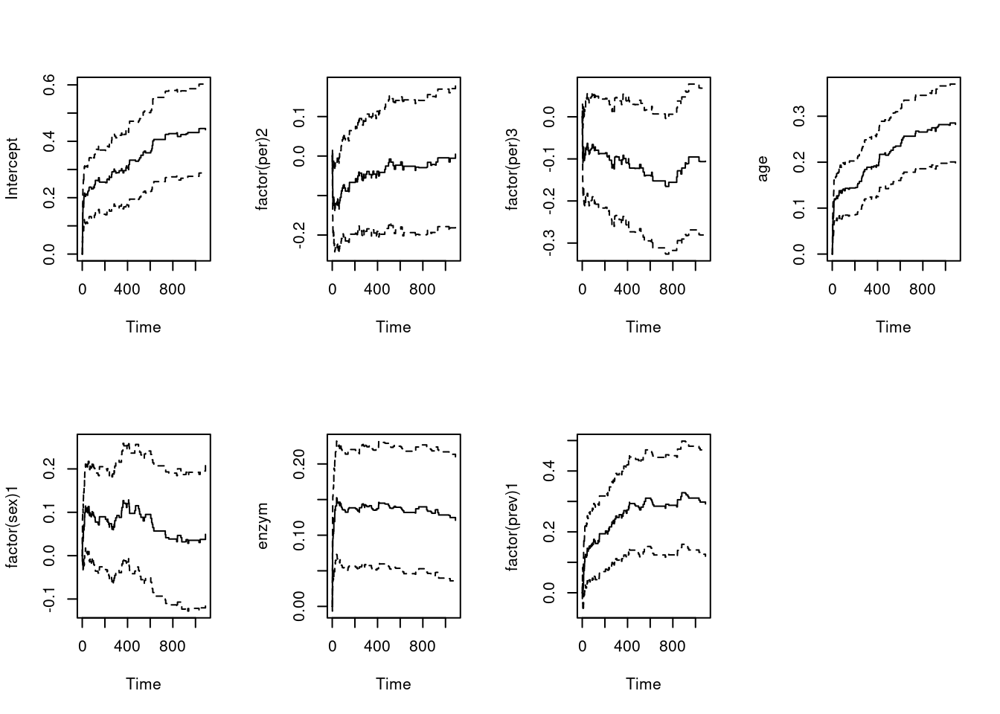
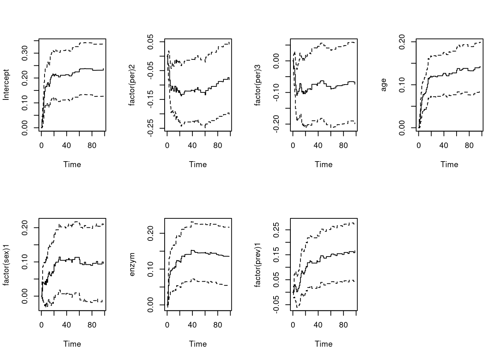
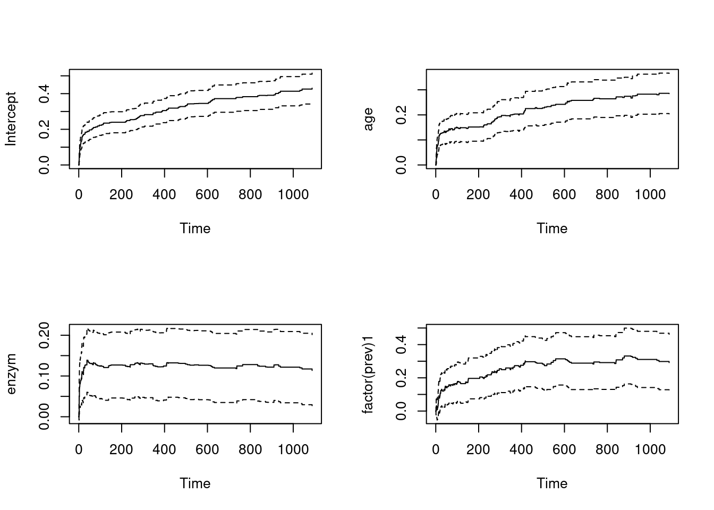

library(survival)
library(tibble)
library(dplyr)Additive regression
At the university hospital of the University of Massachusetts one has for a number of years studied the survival of patients admitted with an acute myocardial infarction (AMI- aka HEART ATTACK!). One aim of the study has been to investigate whether the survival of AMI patients has improved over time. A number of covariates were measured at hospitalization. In addition to information on time of hospitalization (here given in five years periods), we will in this problem restrict attention to the two demographic covariates age and sex, one covariate that is related to the seriousness of the AMI (amount of “heart enzyme”), and one covariate that gives information on whether the patient has had an AMI earlier or not. Further we will restrict attention to the first three years after AMI, so patients who live longer than \(1095 = 3 \times 365\) days have been censored at that time.
You may read the AMI-data into R by the command:
ami=read.table("https://www.med.uio.no/imb/english/research/centres/ocbe/courses/imb9335/ami.txt",header=T) %>% as_tibble()
ami# A tibble: 481 × 8
id days status per age sex enzym prev
<int> <int> <int> <int> <int> <int> <int> <int>
1 1 1 1 1 62 1 485 0
2 2 1 1 1 78 1 910 1
3 3 1 1 1 81 1 320 0
4 4 1 1 1 79 1 3290 1
5 5 2 1 1 60 1 2500 1
6 6 2 1 1 72 0 99 0
7 7 2 1 1 60 1 1200 0
8 8 3 1 1 83 1 160 0
9 9 3 1 1 78 0 66 1
10 10 1095 0 1 72 1 99 0
# ℹ 471 more rowsThe data are organized with one line for each of the \(481\) patients, and with the following variables in the seven columns:
- id: Patient number
- days: Number of days from hospitalization to death or censoring
- status: Indicator for death (1) or censoring (0)
- per: Five year period (1 = 1975-79, 2 = 1980-84, 3 = 1985-89)
- age: Age at hospitalization (in years)
- sex: Sex (0 = male, 1 = female)
- enzym: Amount of “heart enzyme” measured as ”international units” divided by 100
- prev: Information on earlier AMIs (0 = no earlier AMI, 1 = at least one earlier AMI).
We will study the effect of the five covariates (per, age, sex, enzym and prev) using the additive regression model. Our main interest lies in a simultaneous analysis of all five covariates. But nevertheless we will start out by fitting additive regression models with one covariate at a time.
- First we fit an additive model with sex as the only covariate and plot the estimated cumulative regression function. This is achieved by the commands:
fit.sex = survival::aareg(Surv(days,status) ~ factor(sex), data=ami)
fit.sexCall:
survival::aareg(formula = Surv(days, status) ~ factor(sex), data = ami)
n= 481
115 out of 115 unique event times used
slope coef se(coef) z p
Intercept 0.000734 0.00219 0.000222 9.85 6.93e-23
factor(sex)1 0.000405 0.00102 0.000407 2.51 1.20e-02
Chisq=6.31 on 1 df, p=0.012; test weights=aalenprint(fit.sex, maxtime = 100)Call:
survival::aareg(formula = Surv(days, status) ~ factor(sex), data = ami)
n= 481
44 out of 115 unique event times used
slope coef se(coef) z p
Intercept 0.00380 0.00186 0.000251 7.42 1.21e-13
factor(sex)1 0.00285 0.00124 0.000478 2.60 9.27e-03
Chisq=6.77 on 1 df, p=0.00927; test weights=aalenAlso test the null hypothesis that there is no effect of sex (marginally, i.e. when not corrected for the other covariates). You obtain the standardized test and its p-value from the last two columns of the output from the command print(fit.sex). (The maxtime option also works for the print command.)
res = summary(fit.sex) # , maxtime = 100
res$table[2,'p'] # borderline[1] 0.01200272Intercept figure always shows the baseline hazard (reference category when modeling with one covariate or all reference values when modeling with more covariates):
par(mfrow=c(1,2))
plot(fit.sex)
You may want to focus on the first 100 days after hospitalizations.
par(mfrow=c(1,2))
plot(fit.sex, maxtime = 100)
Effect of sex variable is stronger the first 100 days (p-value):
res = summary(fit.sex, maxtime = 100)
res$table[2,'p'][1] 0.009270794- Fit an additive regression model for each of the other four covariates per, age, enzym and prev (one at a time). For each of the covariates you should interpret the estimates you obtain for the cumulative baseline and the cumulative regression function and decide whether the covariate has a significant effect (when not corrected for the effects of the other covariates). In order to ease interpretation of the estimated cumulative baseline function, you should center the numeric covariates age and enzym by subtracting their means.
Scale continuous variables:
- Note that the centering value (e.g. mean or other) is like the reference value:
ami2 = ami %>%
mutate(age = (age - mean(age))/sd(age), enzym = (enzym - mean(enzym))/sd(enzym))per(hospitalization period) has no effect:
fit.per = aareg(formula = Surv(days, status) ~ factor(per), data = ami)
fit.perCall:
aareg(formula = Surv(days, status) ~ factor(per), data = ami)
n= 481
115 out of 115 unique event times used
slope coef se(coef) z p
Intercept 8.66e-04 0.002540 0.000328 7.750 9.49e-15
factor(per)2 1.52e-05 0.000196 0.000458 0.428 6.69e-01
factor(per)3 -6.25e-05 -0.000104 0.000471 -0.222 8.25e-01
Chisq=0.43 on 2 df, p=0.805; test weights=aalenpar(mfrow = c(1,3))
plot(fit.per)
fit.age = aareg(formula = Surv(days, status) ~ age, data = ami)
fit.ageCall:
aareg(formula = Surv(days, status) ~ age, data = ami)
n= 481
115 out of 115 unique event times used
slope coef se(coef) z p
Intercept -1.74e-03 -0.005130 1.00e-03 -5.13 2.90e-07
age 4.22e-05 0.000116 1.64e-05 7.10 1.27e-12
Chisq=50.38 on 1 df, p=1.27e-12; test weights=aalenpar(mfrow = c(1,2))
plot(fit.age)
- Scaling/Centering continuous variable
ageis important for the interpretation of the baseline hazard!!! - Hazard increases with larger
age! (there is an effect)
fit.age2 = aareg(formula = Surv(days, status) ~ age, data = ami2)
fit.age2Call:
aareg(formula = Surv(days, status) ~ age, data = ami2)
n= 481
115 out of 115 unique event times used
slope coef se(coef) z p
Intercept 0.001010 0.00275 0.000204 13.4 3.46e-41
age 0.000535 0.00147 0.000208 7.1 1.27e-12
Chisq=50.38 on 1 df, p=1.27e-12; test weights=aalenpar(mfrow = c(1,2))
plot(fit.age2)
enzymhas no significant effect:
fit.enzym = aareg(formula = Surv(days, status) ~ enzym, data = ami2)
fit.enzymCall:
aareg(formula = Surv(days, status) ~ enzym, data = ami2)
n= 481
115 out of 115 unique event times used
slope coef se(coef) z p
Intercept 0.000909 0.002580 0.000190 13.50 1.10e-41
enzym 0.000223 0.000444 0.000269 1.65 9.92e-02
Chisq=2.72 on 1 df, p=0.0992; test weights=aalenpar(mfrow = c(1,2))
plot(fit.enzym)
prev=> previous hospitalization has significant effect:
fit.prev = aareg(formula = Surv(days, status) ~ factor(prev), data = ami)
fit.prevCall:
aareg(formula = Surv(days, status) ~ factor(prev), data = ami)
n= 481
115 out of 115 unique event times used
slope coef se(coef) z p
Intercept 0.000654 0.00203 0.000207 9.85 6.93e-23
factor(prev)1 0.000674 0.00166 0.000444 3.75 1.77e-04
Chisq=14.06 on 1 df, p=0.000177; test weights=aalenpar(mfrow = c(1,2))
plot(fit.prev)
- Fit an additive regression model with all the five covariates. Determine which of covariates have a significant effect on the mortality (using “backwards elimination”), and thereby obtain a “final model” where all covariates have a significant effect. Interpret the estimates of the cumulative baseline and the cumulative regression functions for your “final model”.
fit.all = aareg(formula = Surv(days, status) ~ factor(per) + age + factor(sex) + enzym + factor(prev), data = ami2)
fit.allCall:
aareg(formula = Surv(days, status) ~ factor(per) + age + factor(sex) +
enzym + factor(prev), data = ami2)
n= 481
115 out of 115 unique event times used
slope coef se(coef) z p
Intercept 0.000842 0.002390 0.000425 5.630 1.83e-08
factor(per)2 -0.000140 -0.000176 0.000477 -0.368 7.13e-01
factor(per)3 -0.000297 -0.000681 0.000474 -1.440 1.50e-01
age 0.000552 0.001480 0.000222 6.680 2.44e-11
factor(sex)1 0.000208 0.000389 0.000426 0.914 3.61e-01
enzym 0.000387 0.000873 0.000283 3.090 2.01e-03
factor(prev)1 0.000647 0.001560 0.000454 3.430 5.98e-04
Chisq=67.78 on 6 df, p=1.16e-12; test weights=aalenpar(mfrow = c(2,4))
plot(fit.all)
print(fit.all, maxtime = 100)Call:
aareg(formula = Surv(days, status) ~ factor(per) + age + factor(sex) +
enzym + factor(prev), data = ami2)
n= 481
44 out of 115 unique event times used
slope coef se(coef) z p
Intercept 0.00519 0.002180 0.000481 4.53 5.91e-06
factor(per)2 -0.00273 -0.000834 0.000552 -1.51 1.31e-01
factor(per)3 -0.00206 -0.000728 0.000568 -1.28 1.99e-01
age 0.00293 0.001260 0.000254 4.98 6.50e-07
factor(sex)1 0.00217 0.000874 0.000497 1.76 7.87e-02
enzym 0.00388 0.001350 0.000395 3.42 6.27e-04
factor(prev)1 0.00277 0.001390 0.000514 2.71 6.77e-03
Chisq=46.16 on 6 df, p=2.75e-08; test weights=aalenpar(mfrow = c(2,4))
plot(fit.all, maxtime = 100)
Let’s keep only the variables in the model that had a significant effect:
fit.final = aareg(formula = Surv(days, status) ~ age + enzym + factor(prev), data = ami2)
fit.finalCall:
aareg(formula = Surv(days, status) ~ age + enzym + factor(prev),
data = ami2)
n= 481
115 out of 115 unique event times used
slope coef se(coef) z p
Intercept 0.000752 0.002270 0.000224 10.10 3.81e-24
age 0.000554 0.001510 0.000212 7.10 1.23e-12
enzym 0.000358 0.000812 0.000279 2.90 3.67e-03
factor(prev)1 0.000653 0.001570 0.000450 3.49 4.85e-04
Chisq=62.99 on 3 df, p=1.35e-13; test weights=aalenpar(mfrow = c(2,2))
plot(fit.final)
- When analyzing censored survival data, Cox regression is commonly used. Discuss benefits and drawbacks of using the additive model (rather than Cox’s model) for analyzing the AMI data.
- With additive regression you can check what is the treatment effect across time, which you lose when doing CoxPH!